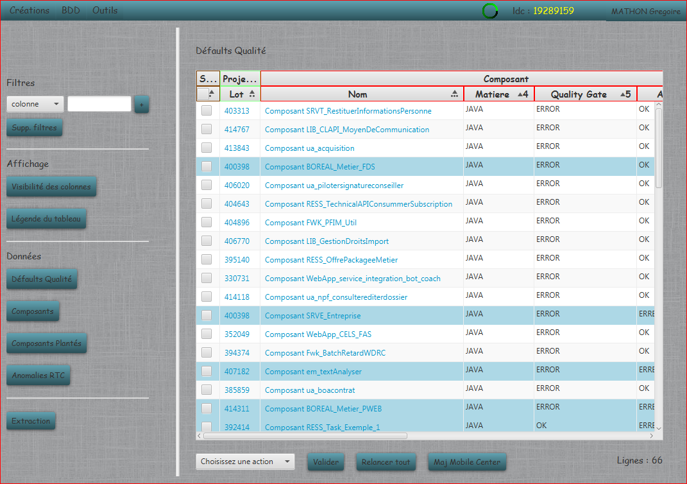
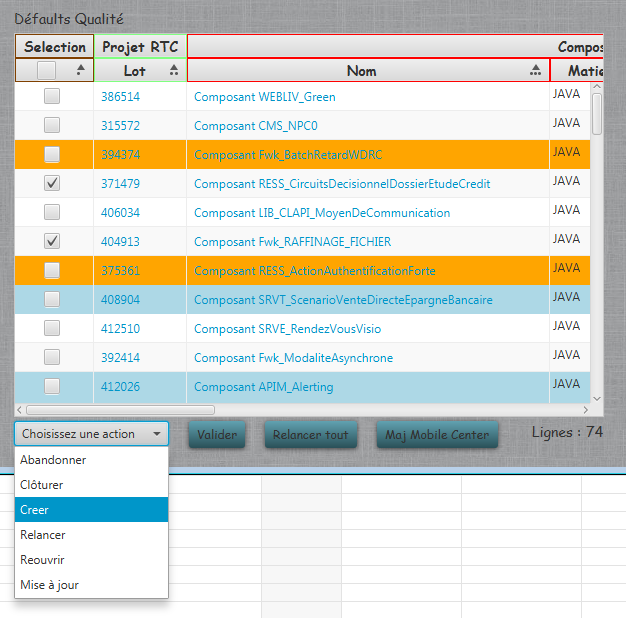
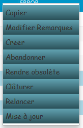
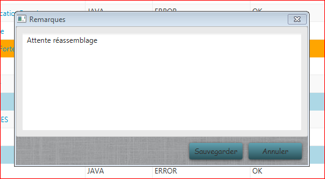

Défauts Qualité
Affiche la liste des défauts qualité détectés et en cours. Pour voir l'utilisation du menu de gauche, merci de vous reportez au chapitre BDD.

Le menu en bas permet permet d'effectuer toutes les actions de contrôle sur les défauts :
- Le bonton Maj Mobile Center permet de mettre à jour les informations des composants depuis l'instance SonarQube du Mobile Center.
- Le bonton Relancer tout relance tous les défauts qualité RTC, ouverts ou relancés depuis plus d'une semaine.
- Le bouton Valider permet de lancer l'action choisie sur les défaut selectionnés :
- Abandonner : abandonne le défaut et l'anomalie RTC is celle-ci a été créée, et ne le remonte jamais dans la liste. A utiliser lorsque la correction n'a pas été faite.
- Clôturer : clôture le défaut et l'anomalie RTC is celle-ci a été créée. A utiliser lorsque la correction a été effectuée.
- Créer : crée une anomalie RTC si celle-ci n'a pas déjà été créée. Prépare un mail dans Outlook.
- Relancer : relance l'anomalie RTC si celle-ci a été créée. Prépare un mail dans Outlook.
- Rendre obsolète : abandonne le défaut et l'anomalie RTC is celle-ci a été créée, et ne le remonte jamais dans la liste. A utiliser lorsqu'un nouveau lot est créé sur le composant.
- Mise à jour : Mise à jour du lot, de l'anomalie RTC et du composant avec les dernières informations diponibles.

Le menu contextuel permet d'effectuer les actions sur le défaut selectionné :

- les boutons : Abandonner, Clôturer, Créer, Relancer, Rendre obsolète, et Mise à jour ont les mêmes fonctions que le menu du bas.
- Modifier Remarques : permet de modifier et de sauvegarder les remarques sur le défaut.

- Copier : Permet d'enregistrer dans le presse-papier le texte de la cellule selectionnée.